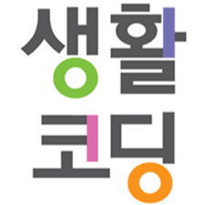

여러분에게 제 자신을 소개하고 싶습니다.
저는 신체적으로 불편한 몸을 가젔지만 특히 좋아하는것이 있는데요,
그 중 하나가 바로 체육입니다. 체육은 저의 고난과 역경을 지워내고 남자로써의 삶을 사는데 동반자같은 친구가 되어주었습니다.
지금은 코딩야학 4기를 통해 HTML을 공부중이죠 제가 어떤 삶을 살고있는지 궁굼하다면 과거, 현재,미래의 링크를 클릭해보시면 알수있습니다.
Start 2018 08 01 ~ End 2018 08 14

이 페이지를 코딩한 목적은 과거 현재 미래의 저를 되돌아보고
많은 사람들에게 저의 꿈을 당당하게 들려주고 싶어서 입니다.
-대학 때 컴퓨터를 전공했으나 많이 까먹고 기억나는게 없어서.. 절망적이였으나
코딩야학 4기를 통해 다시 기쁜 순간을 맞이했다는 생각이 들어 감사드립니다.
홈페이지에 저의 정체성을 담고 싶습니다. - 2018년 8월 현재 24세인
다리는 불편하지만 꿈이 있는 한 청년이.